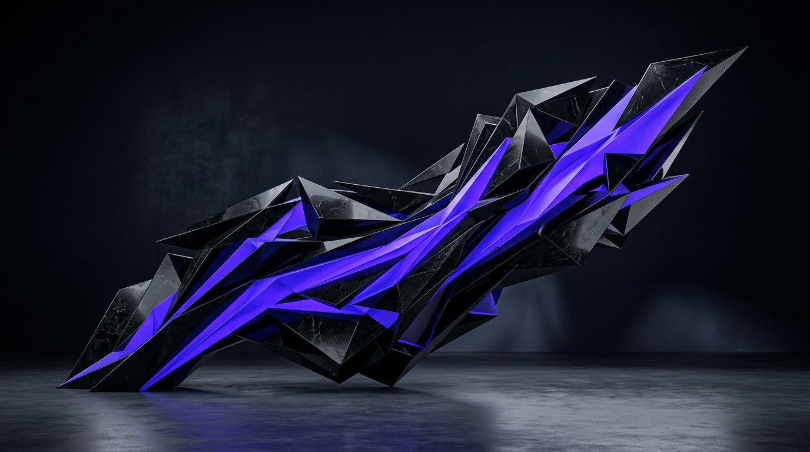
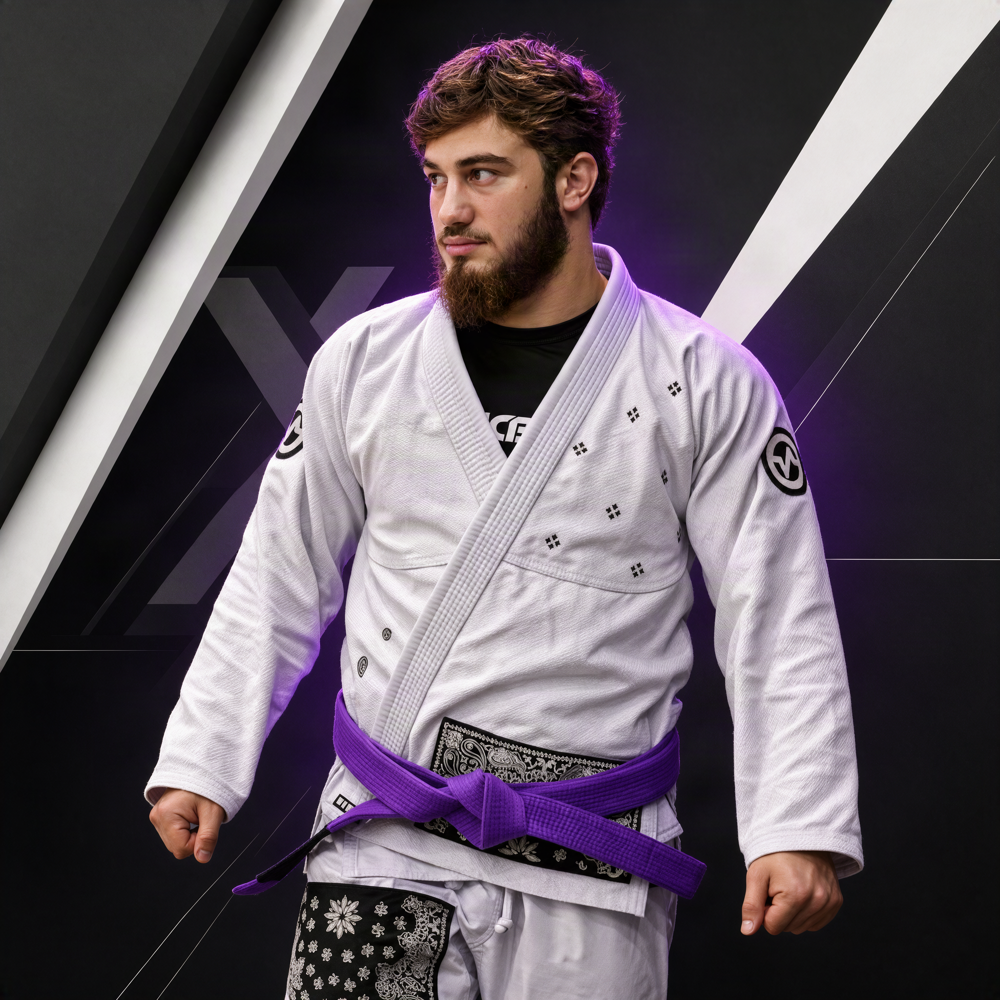
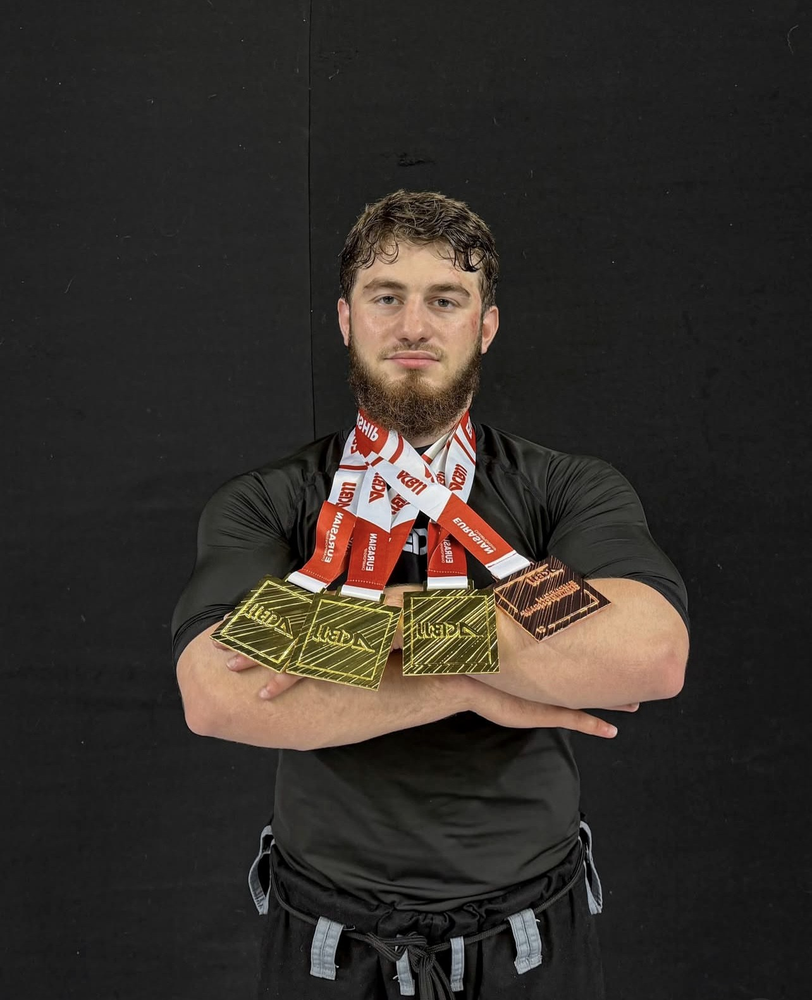

ПРОТЕИН
Помогает добрать белок в рационе. Белок поддерживает восстановление и рост мышц в сочетании с тренировками.

BIORYX — магазин спортивного питания для людей, которые выбирают движение, дисциплину и свободу быть собой.
BIORYX специализируется на спортивном питании и спортивных добавках. Мы помогаем найти продукты, которые удобно встроить в рацион и тренировочный ритм — под твои задачи, привычки и уровень подготовки.
Для нас важны не громкие обещания, а осознанный выбор: понятный состав, рекомендации производителя и уважение к индивидуальному пути каждого спортсмена.
ИССЛЕДОВАТЬ КАТАЛОГ ↗
Основатель BIORYX — Абдул-Хаким, профессиональный спортсмен, выступающий в бразильском джиу-джитсу. Он — пятикратный чемпион мира, пятикратный чемпион России и пятикратный чемпион Европы. Он знает: результат складывается из регулярной работы, внимания к деталям и уважения к процессу.
Этот опыт лежит в основе BIORYX: помогать людям делать осознанный выбор и двигаться к своей цели — не копируя чужой путь, а создавая свой.
Победа начинается с готовности работать над собой. Уважение — к себе, сопернику и собственному темпу — делает этот путь сильнее.
Система и постоянство важнее случайного рывка.
К своему телу, своему выбору и людям рядом.
Выбирай свою цель и двигайся к ней в своём ритме.

Спортивное питание помогает дополнить рацион, когда это удобно и подходит под твои задачи. Основа прогресса — тренировки, разнообразное питание и восстановление.
Помогает добрать белок в рационе. Белок поддерживает восстановление и рост мышц в сочетании с тренировками.
При регулярном применении может повышать работоспособность в коротких сериях высокоинтенсивных нагрузок.
Сравнивай состав и рекомендации производителя. Выбирай продукты с учётом своего рациона и состояния здоровья.
Добавки не заменяют полноценное питание и не гарантируют спортивный результат. Если есть заболевания, противопоказания, беременность или ты принимаешь лекарства, перед применением проконсультируйся с врачом.
Свяжись с нами — расскажем о товарах, заказе и условиях получения.